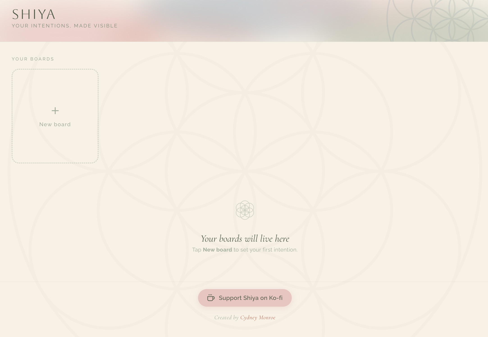
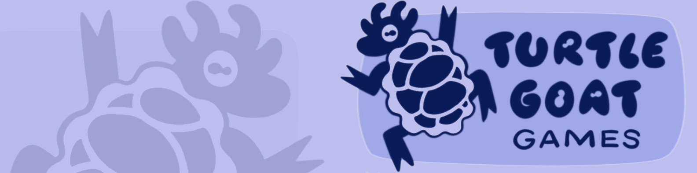
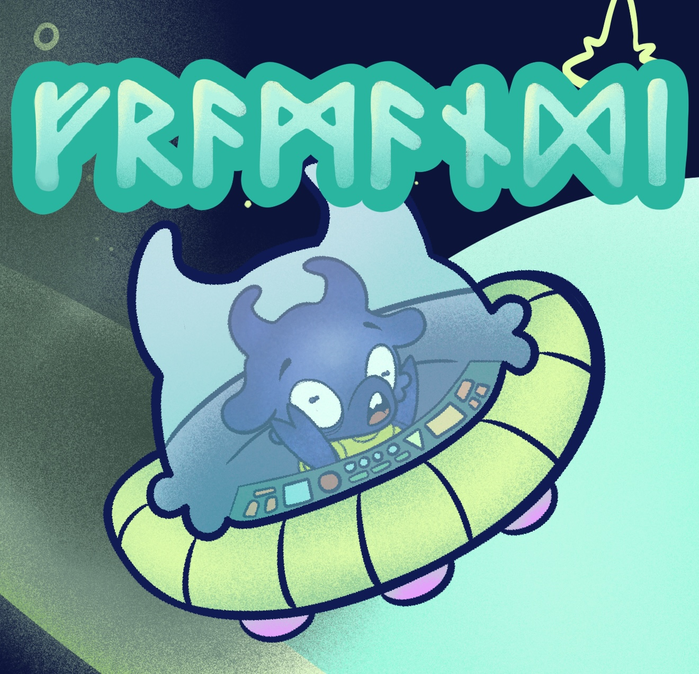
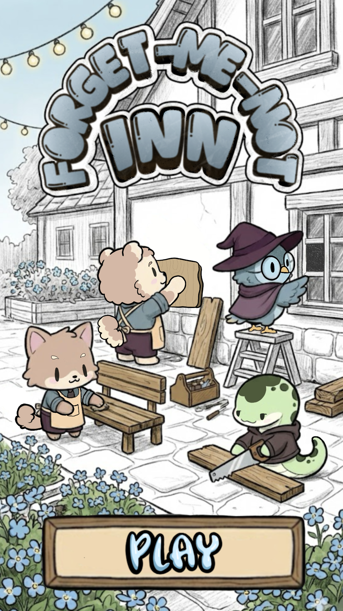
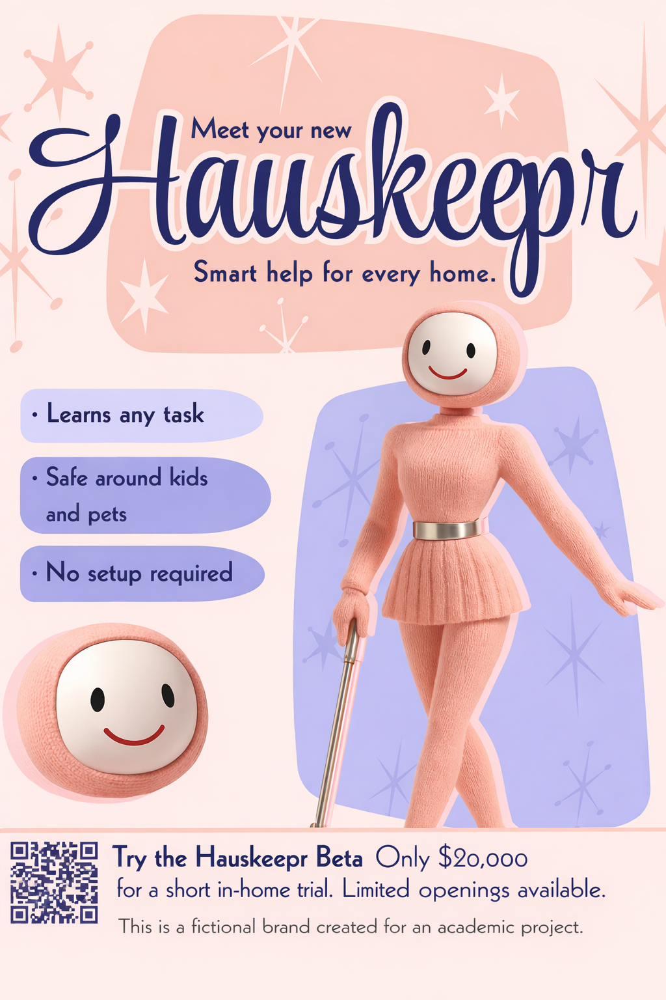

About me
Hi, I'm Cydney.
Science fiction writer, game designer, and illustrator who builds interactive stories that encourage curiosity, empathy, and reflection.
Co-founder of Turtle Goat Games. Creator of Shiya.
View résumé ↓
About me
Science fiction writer, game designer, and illustrator who builds interactive stories that encourage curiosity, empathy, and reflection.
Co-founder of Turtle Goat Games. Creator of Shiya.
View résumé ↓Projects
Your intentions, made visible

A vision board builder for mobile and desktop wallpapers. Add images, affirmations, and tarot cards — then export or save to your home screen.
shiyaapp.netlify.app →

Fremandi Play on itch.io ↗
2.5D escape · Unity · Climate narrative

Forget-Me-Not Inn
Match-3 mystery · GameMaker · Story-driven

Kaizen Daido
Cozy RPG · RPG Maker · Language learning

HausKeepr Play now →
Branching thriller · Twine · AI ethics
HausKeepr
A branching narrative thriller · exploring AI ethics & corporate responsibility
Résumé
Professional background — skills, experience & education.
Cydney Monroe
Game Design · Narrative Design · Creative Consulting
Creative Writing BFA graduate and current Game Design student focused on interactive storytelling, player-driven progression, and UX-aligned writing. Combines creative writing with systems thinking to support both player experience and development workflows.
Experience
Game Designer — Turtle Goat Games
May 2026 – Present · Richmond, VA
Creative Consulting — Freelance
Mar 2019 – Present · Hybrid
Test Publishing Administrator — Pearson
Jul 2024 – Feb 2026 · Remote, Richmond, VA · Promoted from Test Development Technician
Managing Owner — Speakeasy Tattoo Lounge
Dec 2018 – Dec 2023 · Springdale, AR
Director / Photographer — Cydney Bergdorf Photography
Jun 2007 – Dec 2023
Education
Creative Writing, BFA
Full Sail University · Focus: Game Design · 2026
Game Studies & Design, BS
Old Dominion University · 2027
Digital Cinematography, AA
Full Sail University
Certifications & Languages
Contact
Open to hiring, contract, and collaboration inquiries. Reach out and let's chat.
Send me an emailRichmond, VA | cydneybergdorf@gmail.com | linkedin.com/in/cydneymonroe
Creative Writing BFA graduate and current Game Design student focused on interactive storytelling, player-driven progression, and UX-aligned writing. Combines creative writing with systems thinking to support both player experience and development workflows.
May 2026 - Present | Richmond, VA
March 2019 - Present | Hybrid
July 2024 - February 2026 | Remote, Richmond, VA
December 2018 - December 2023 | Springdale, AR
June 2007 - December 2023
Narrative Design: Branching Dialogue, Interactive Storytelling, Narrative Systems, Character Tone and Voice. Game Writing: NPC Dialogue, Tutorial Writing, UI Copy, Event Narrative Design. Tools: Unity, RPG Maker MZ, GameMaker, Twine, Jira, Confluence, Smartsheet, Lucidchart, Adobe Creative Suite, SharePoint, Microsoft 365. Methods: Agile, Scrum, Documentation and Flow Mapping, Cross-functional Collaboration, Stakeholder Communication.
Creative Writing, BFA - Full Sail University, Focus: Game Design, 2026
Game Studies and Design, BS - Old Dominion University, Expected 2027
Digital Cinematography, AA - Full Sail University
Certified Associate in Project Management (CAPM); Certified ScrumMaster (CSM). English (Native), Spanish (Limited Working), Japanese (Elementary).